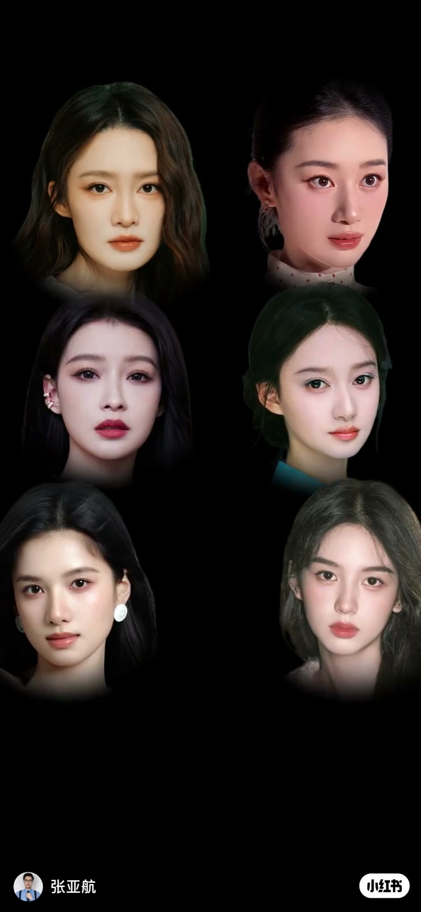
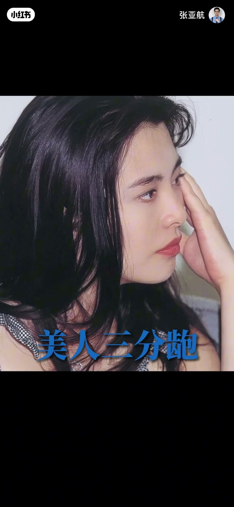
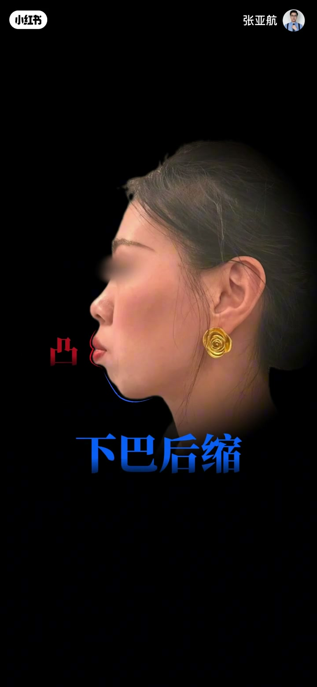
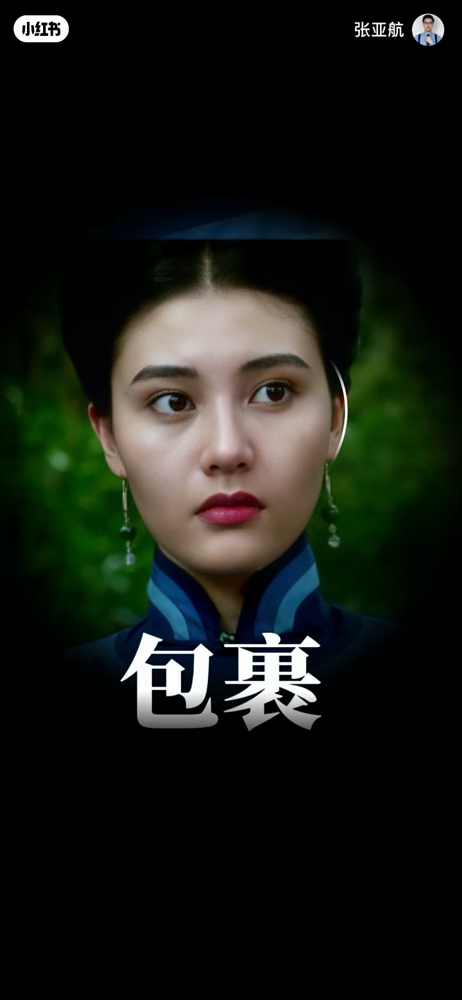
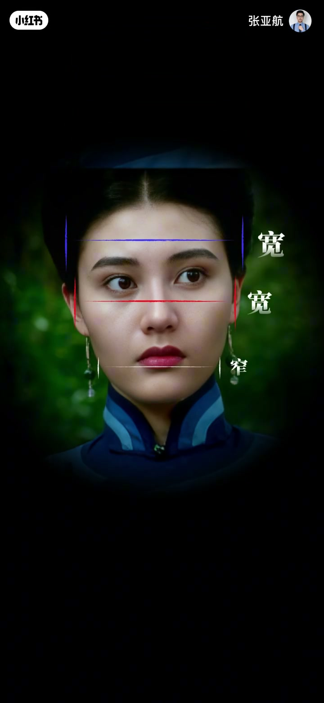
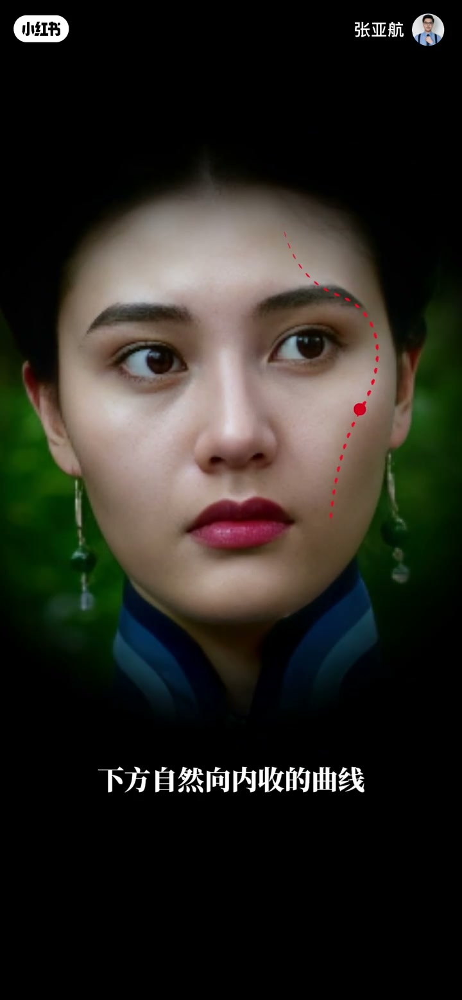
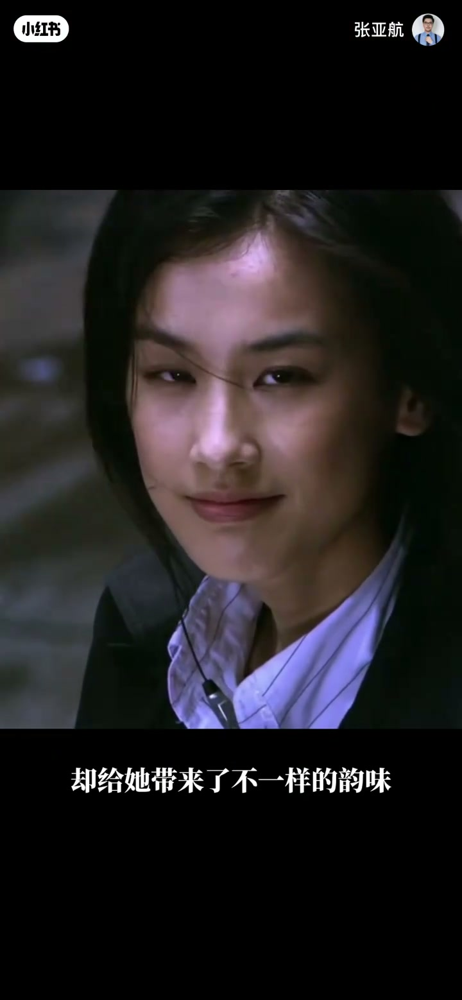

内容要点
一段 2 分 35 秒的审美思辨。UP 主提出核心观点：早年出圈的美人各有辨识度，原因在于他们的脸都有不同缺点，但缺点完美适配气质。三个案例——王祖贤：轻微地包天不是缺陷，而是美人三分抛的完美诠释（额面与上颌骨量充足正面看不出来；反面是下巴后缩加强嘴凸）；李嘉欣：颧骨高外阔但颞部饱满宽于颧弓有包裹关系、头包脸趋势、颧结节高光点位于面中部构成内收曲线——明艳张扬；黄圣依：被吐槽高眼位长中庭，但换来高智感清冷感，小虎牙兔牙带来少女感。结论：大众眼中的缺陷在美人脸上是辨识度，变美要保留自身特色。
知识结构
辨识度来自缺点与气质的适配，而非无缺点。
轻微地包天=美人三分抛；额面与上颌骨量充足正面看不出；下巴后缩才是嘴凸元凶。
颧骨外阔但颞部包裹、头包脸趋势、内收曲线——明艳张扬拿下港姐冠军。
高眼位长中庭→高智感清冷感；虎牙→少女感；眉尾下落降低凌厉感。
大众眼中的缺陷在美人脸上是辨识度；变美要保留特色。
辨识度的本质是『缺点与气质适配』：王祖贤的地包天成就三分抛的古典韵味，李嘉欣的颧骨外阔成就明艳张扬的港风，黄圣依的高眼位长中庭成就高智清冷感。关键判断：一个面部特征好不好看，要看它与其他部位的关系（包裹、收窄、内收），而不是孤立看。变美的正确姿势是保留特色找方向，而非抹平一切。
00:00-00:14立论：辨识度来自缺点的适配
开场抛出问题：娱乐圈壮年艺人越来越多，但早年出圈的美人们怎么美的各有辨识度？
答案：「原因就在于他们的脸都有不同的缺点，但缺点却完美适配他们的气质。」一句话点破审美本质——辨识度不是没有缺点，而是缺点长对了地方。

00:14-00:53王祖贤：轻微地包天=美人三分抛
王祖贤侧面看有轻微的地包天，但「在他脸上不是缺陷，反而是美人三分抛的完美诠释」。
为什么正面看不出来？「因为他的额面和上颌骨骨量都是充足的，视觉上能够很好的优化地包天的问题。」加之下巴不后缩，嘴凸的感觉不明显。
反面教材也很清晰：「很多地包天不好看的原因就是下巴后缩——嘴本身就是向前凸的，下巴过于后缩只会加强嘴凸感。」
这个缺点的气质价值：既能诠释小倩的「身不由己、渴望真爱」，也能演绎白蛇的极致魅惑——眼神勾人又温柔，摄人心魄。


00:53-01:40李嘉欣：外阔颧骨+包裹关系=明艳张扬
按现在的审美看，李嘉欣颧骨高还有些外阔，「但这也不能影响他的颜值」。原因在于比例关系：颧弓虽然宽于其他部位，但不会过宽。
「他的颞部是饱满的，颞部的宽度宽于颧弓，甚至二者之间能有很好的包裹关系。」耳朵外展度合适，能优化面部外轮廓，呈现头包脸的趋势。下颌量感充足，不会头重脚轻。
最关键的一笔：颧结节（颧骨高光点）并不过于外阔，而是位于面中部——上方衔接眼眶骨，下方自然向内收的曲线，形成联动关系，构成视觉内收的曲线。
结果：「明艳张扬，能拿下港姐冠军，也能演得了末代皇后。很多人骂过他和杨子的婚姻，但没人说过他不好看。」



01:40-02:22黄圣依：高眼位长中庭→高智清冷
很多人吐槽黄圣依高眼位、长中庭，但「没人会否认七仙女的颜值」。她的脸确实不是当下影视圈认可的标准三庭五眼，但长中庭高眼位「却给他带来了不一样的韵味——高智感、高级感」。
早期标志性的小虎牙和兔牙带来甜美少女感；下颌恰到好处，能加强面部收窄感，上镜更有优势。
三庭比例没有过分夸张，通过自然下落的眉尾，「能适当降低高眼位带来的凌厉感，取而代之的是清冷感」。这种清冷感在《功夫》里的哑女身上体现得淋漓尽致。

02:22-02:35总结：保留特色，再谈变美
「这些大众眼中的缺陷，在美人的脸上却是辨识度。」
「我们在变美的过程中，是可以在保留自身特色的同时，找到更多变美的方向的。」结尾金句：「我是张雅航，关注我，学会审美，再谈变美。」
完整转录（102段）
以下文本由 Whisper medium 模型自动转录，可能存在少量识别误差，已尽可能修正。
都说人口大国基因就是全面
现在娱乐圈壮年艺人越来越多
但早年间大伙出圈的美人们
怎么美的各有辨识度
原因就在于
他们的脸都有不同的缺点
但缺点却完美适配他们的气质
你看王祖贤
侧面看
轻微的地包天
在他脸上不是缺陷
反而是美人三分包的完美诠释
从正面看
你感受不到他的地包天
这是因为他的额面
上和骨骨量都是充足的
视觉上能够很好的
优化地包天的问题
加之他的下巴并不厚缩
嘴凸的感觉也没那么明显
很多地包天不好看的原因
就是下巴厚缩
嘴本身就是向前凸的
下巴过于厚缩
只会加强嘴凸感
因为轻微的包天
他能诠释出
倩女幽魂里小倩的
身不由己 渴望真爱
也能演绎出白蛇的极致魅惑
眼神勾人又温柔 赦人心魄
再看李嘉欣
按照现在的审美来看
你会觉得他拳骨高
还有些外阔
但这也不能影响他的颜值
他的拳弓位置
虽然宽于其他部位
但不会过宽
他的捏曲是饱满的
捏曲的宽度宽于拳弓
甚至二者之间
能有很好的包裹关系
耳朵的外展度也是合适的
能够优化面部外轮廓
呈现头包脸的趋势
下盒量感是充足的
所以不会显得头重脚轻
整个面部结构是宽宽窄
而他拳结节
也就是拳骨高光点
并不是过于外阔的
相反 这个高光点
是位于面中部的
能够刻上方的眼框骨
下方自然向内收的曲线
形成连动关系
构成视觉内收的O技曲线
所以这样一张脸
名艳张扬
能拿下港姐冠军
也能演得了末代皇后
很多人骂过他和杨子的婚姻
但没人说过他不好看
吐槽过他高眼位
长中庭
但没人会否认
妻仙女的颜值
黄胜一的脸
确实不是当下影视圈
认可的标准
三庭无眼
但长中庭高眼位
却给他带来了
不一样的韵味
高智感
节感
这样的词语放在现在的他身上
刚刚好
早期的他
标志性的小虎牙和兔牙
给他带来甜美少女感
而未刚好合适
能够加强他的面部收窄感
上镜更有优势
三庭比例也没有过分夸张
通过自然下落的眉尾
能适当降低高眼位带来的灵力感
取而代之的是清冷感
这种清冷感
在功夫里的雅女身上
体现了淋漓尽致
你看
这些大众眼中的缺陷
在美人的脸上却是辨识度
我们在变美的过程中
是可以在保留自身特色的同时
找到更多变美的方向
我是张雅航
关注我
学会审美
再谈变美